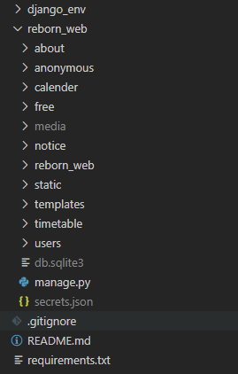

Django 01. 프로젝트 소개
Django프레임워크로 개발한 프로젝트를 소개하고 각 App별 기능들을 설명합니다.
1. 포스팅 목적
강의 포스팅이 아닌 개발기록 포스팅입니다. 졸업 후 홈페이지를 유지보수 할 학과 후배들을 위해 개발한 내용을 기록합니다.
Django에 대해 자세하게 알지 못하기에 구현과정 중 틀린부분 또는 Django Convention을 지키지 않았을 수도 있습니다. 프로젝트를 진행하며 공부한 내용을 기록한 글이라는 느낌으로 봐주시면 감사하겠습니다. 지적할 부분은 댓글로 남겨주시면 제가 더 공부해서 수정하겠습니다.
아래와 같은 개발스택을 사용하였습니다.
Backend : Django/Python
Frontend : Javascript, jQuery, Bootstarp4
DB : Django 내장 DB (Sqlite3)
서버 : Centos7.6, Apache
버전관리 : Git
Django 프레임워크의 기초적인 개념은 포스팅하지 않기에 Django를 처음 접하시는 분들에겐 내용이 어려울 수 있습니다. (후에 Django기초는 따로 포스팅 예정입니다.)
2. 프로젝트 소개
대학교 졸업작품으로 진행한 프로젝트이며, 기존 학과홈페이지의 불편한 점을 개선하고, 원할한 정보전달과 학부생들의 소통을 목적으로 한 Django 프레임워크 기반의 학과홈페이지 프로젝트입니다.
3. 프로젝트 기능
전체 프로젝트 구조는 아래와 같습니다.

프로젝트명은 reborn_web이며 이후 포스팅에서는 cs_web이란 프로젝트명으로 진행하겠습니다.
users
사용자 계정 App입니다. 기본적인 로그인, 회원가입, SMTP를 활용한 인증, 프로필수정, Ajax로 아이디/비밀번호 찾기, 비밀번호 변경, 회원탈퇴 등의 기능을 구현하였습니다.
notice
학과 공지사항 App입니다. 관리자 권한의 계정만 CRUD가 가능하며 게시글 검색, 공지사항 상단표시 등과 같은 기능을 추가하였습니다.
free
자유게시판 App입니다. 질문, 정보와 같은 카테고리를 추가하였고, 공지사항 App과 달리 Ajax로 댓글달기, 답글달기와 같은 기능을 추가하였습니다.
anonymous
익명게시판 App입니다. 페이스북 타임라인, 에브리타임을 모티브로 한 무한스크롤형식의 게시판입니다. 작성자는 익명으로 표시되며, 추천하기 등의 기능을 추가하였습니다.
calender
학과일정 App입니다. Django Model만 연결했으며 JavaScript의 구현 비중이 더 높기에 따로 포스팅은 하지 않겠습니다.
timetable
학과시험시간표 App입니다. 학년별 시험시간표, 사용자가 수강하는 과목만 선택하여 테이블형식으로 시험시간표를 볼수 있습니다. 관리자 권한의 사용자는 시험시간표를 업데이트 할 수 있으며, 마지막 업데이트 시간을 표시하게 구현하였습니다.
about
학생회 정보, 학과 내 동아리, 연구실 소개 등과 같은 기능을 추가한 App입니다.
4. 개발환경
OS : window10
IDE : VsCode
Python : 3.7.4
Django : 3.0.2
5. 소스코드
전반적인 Backend는 구현완료 상태이며, 메인화면 디자인 수정 작업 중에 있습니다. (2020/03/22)